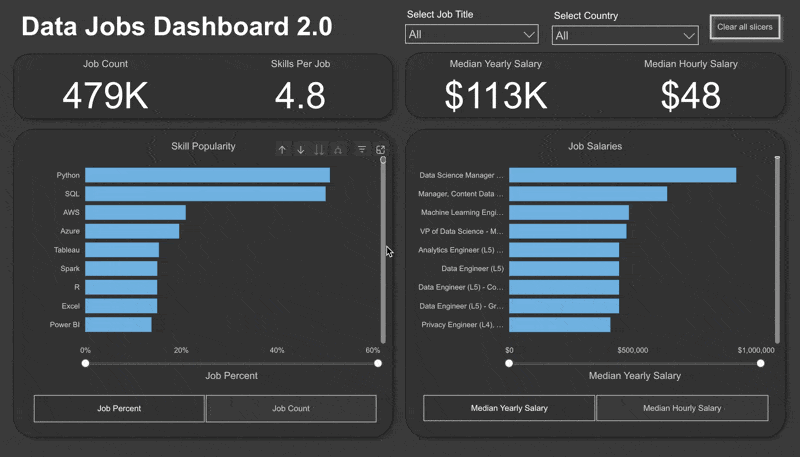
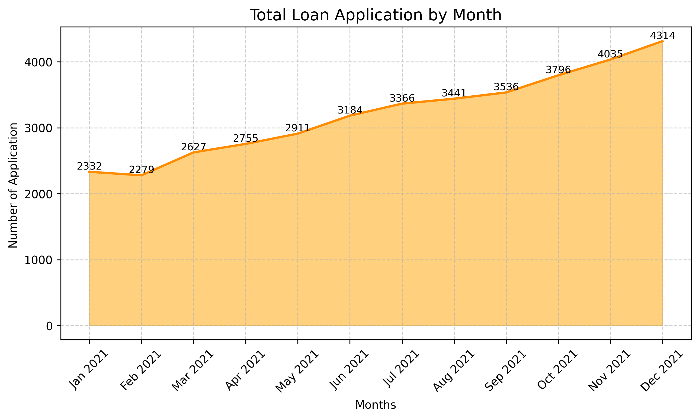
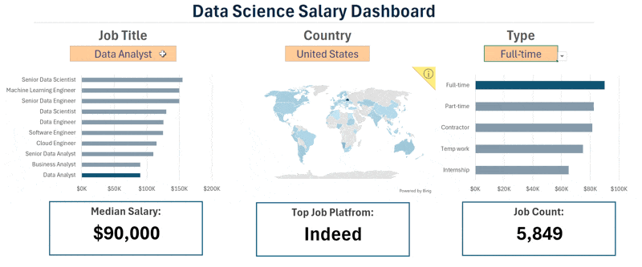

Data Analyst with an engineering background, skilled in Python, SQL, Power BI, and Advanced Excel. Experienced in analyzing 780K+ records, evaluating $400M+ financial portfolios, and building automated dashboards that drive business decisions.
As a B.Tech Electrical Engineering graduate from Madhav Institute of Technology & Science, Gwalior, Madhya Pradesh, I bring structural discipline to complex big data. I specialize in designing and engineering end-to-end processing pipelines, safely parsing string-encoded metadata arrays, and establishing relational models.
With hands-on execution navigating pipelines scaling past 780,000+ data assets, evaluating $400M+ financial portfolios, and tuning analytical rendering configurations, my core strategy focuses on scaling operational visibility, optimizing query structures, and mitigating risks.

Query-engineered a comprehensive PostgreSQL database analyzing a dense relational footprint of 780,000+ technical job posting records. Formulated structured Common Table Expressions (CTEs), multi-layered analytical subqueries, and advanced optimizations to isolate top-paying configurations and eliminate redundant scanning structures.

Evaluated a comprehensive credit lending infrastructure representing a $400M+ active portfolio value spanning over 35,000+ client accounts. Built structural classification pipelines to isolate non-performing loans and establish risk tracking.

Structured a robust HR compensation tracking framework aggregating granular compensation bounds across 10,000+ technical practitioners and 12+ industry specialties. Deployed automated calculation loops utilizing XLOOKUP models and nested logic matrices.
Engineered a dynamic Power BI data model to analyze hyper-local grocery delivery performance across shifting regional dimensions. Programmatically mapped multi-variable processing stages using Python (Pandas) to isolate category trends and automate tracking dashboards.
Architected relational schema definitions utilizing PostgreSQL. Formulated deeply nested Common Table Expressions (CTEs), multi-level analytical window formulas, and indexed clusters to minimize latency overheads on dense unstructured data matrices.
Ingested and wrangled a massive global dataset exceeding 780,000+ technical job posting records using the Hugging Face API ecosystem. Fabricated data-cleansing pipelines using abstract syntax trees to securely isolate string arrays into operational schemas.
Modelled historical commercial retail parameters across 45 distinct geographical store nodes. Aggregated complex macroeconomic trends (including unemployment indexes and localized fuel cost charts) to evaluate sales seasonality variables.
Rigorous end-to-end curriculum charting deep data processing, relational architectures, cleaning logic, and descriptive metric storytelling dashboards.
Deep-dive technical querying validation involving advanced optimization algorithms, layered windows, and transaction schema tuning environments.